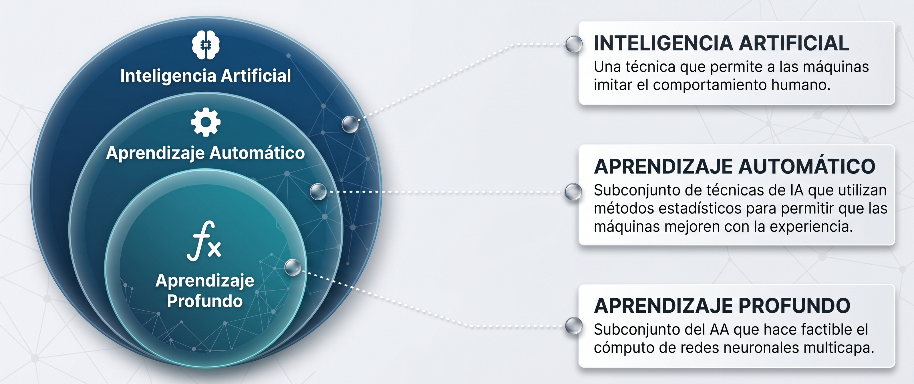
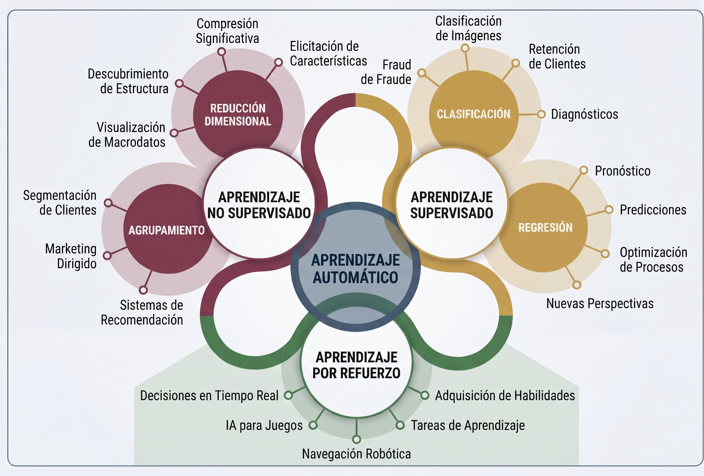

ML para Señales e Imágenes Médicas
Flujo completo, buenas prácticas y demos con datos sintéticos
¿Qué es Machine Learning (ML)?
El Machine Learning (Aprendizaje Automático) es un proceso automatizado que se encarga de extraer patrones a partir de los datos.
Es un campo de conocimiento crucial y una tecnología omnipresente.
Su objetivo fundamental es ajustar modelos a los datos proporcionados para permitir la predicción y clasificación.
¿Qué es Machine Learning (ML)?

¿Qué es Machine Learning (ML)?

El Rol de la Predicción
El ML busca aprender a predecir (estimar o aproximar) la etiqueta de un punto de datos basándose exclusivamente en sus características (features).
Implementa el principio científico de “prueba y error”.
Esto se logra refinando continuamente un modelo de forma iterativa, basándose en la pérdida incurrida por sus predicciones frente a los datos reales observados.
Componentes Esenciales
La teoría del Machine Learning se presenta como la combinación de tres componentes básicos e interdependientes:
- Datos (Data): La materia prima a partir de la cual el sistema aprende.
- Modelo (Model): La estructura matemática que se ajusta a los datos (ej. red neuronal, árbol de decisión).
- Función de Pérdida (Loss Function): Mide la discrepancia entre las predicciones del modelo y los valores reales observados.
El Machine Learning (ML) y la Sanidad
El Machine Learning (ML) es un proceso automatizado que se dedica a extraer patrones complejos de los datos. En el sector salud, el objetivo es utilizar el ML para apoyar la toma de decisiones clínicas y operacionales.
El ML supervisado aprende un modelo a partir de un conjunto de características descriptivas y una característica objetivo, basándose en un conjunto de ejemplos históricos.
Tipos de Modelos de ML
- Redes Neuronales Convolucionales (CNNs): Modelos de Deep Learning ideales para procesar datos con estructura de cuadrícula, como las imágenes, cruciales en el diagnóstico médico.
- Redes Neuronales Recurrentes (RNNs): Modelos de Deep Learning que pueden procesar secuencias de datos, como series temporales de señales fisiológicas.
- Transformers: Modelos de Deep Learning que pueden procesar secuencias de datos, como series temporales de señales fisiológicas.
- IA Causal: Utilizada para hacer inferencias sobre causa y efecto, lo cual es vital en la biología, la medicina y el desarrollo de fármacos.
Tipos de Modelos de ML
- Modelos Predictivos: Permiten asignar un valor a cualquier variable desconocida, incluso si no tiene un aspecto temporal (como predecir un diagnóstico).
- Modelos descriptivos: Permiten identificar patrones y relaciones en los datos, como la segmentación de pacientes en subgrupos.
- Modelos prescriptivos: Permiten sugerir acciones óptimas basadas en los datos, como la recomendación de un tratamiento específico para un paciente.
- Modelos de optimización: Permiten encontrar la mejor solución a un problema dado, como la planificación de recursos en un hospital.
Casos de Uso en el Diagnóstico Médico
La analítica predictiva se utiliza para construir modelos que asisten en el diagnóstico, aprovechando grandes colecciones de ejemplos históricos que superan lo que un solo individuo vería en su carrera.
- Clasificación de Imágenes: Las CNNs son adecuadas para tareas que involucran datos con estructuras de cuadrícula fija.
- Detección de Cáncer: Los modelos se pueden construir para la identificación de especies bacterianas o la clasificación de muestras de tejido para el cáncer de mama.
- Predicción de Riesgo Cardiovascular (CVD): Los modelos de regresión logística pueden predecir la probabilidad de que un paciente tenga una enfermedad.
- Medicina de Precisión: Las distribuciones de probabilidad se usan para modelar poblaciones y subpoblaciones, lo cual ayuda a dirigir tratamientos específicos a grupos de pacientes que podrían beneficiarse, por ejemplo, los que tienen diabetes.
Desafíos del ML en el Sector Salud
La IA Causal es fundamental para ir más allá de la correlación y estimar los efectos de una acción.
- Optimización de Dosis: Los modelos pueden predecir las dosis óptimas de un medicamento basándose en datos históricos de tratamientos y resultados asociados.
- Costos de I+D: El desarrollo de nuevos fármacos es costoso (puede llegar a USD 2-3 mil millones) y tiene una alta tasa de fracaso (95% en ensayos clínicos).
- Errores de Atribución: Una parte significativa de los fracasos en el desarrollo de medicamentos se atribuye a errores de atribución causal, como la mala selección de objetivos farmacológicos.
Estimación de Efectos y Robustez
- Efectos Heterogéneos del Tratamiento (CATEs): Miden cómo varían los efectos de un tratamiento en diferentes segmentos de la población.
- Robutsez Adversarial: En aplicaciones sensibles, la seguridad de los modelos debe ser evaluada frente a ataques, como la manipulación de imágenes médicas.
La Necesidad de Modelos Interpretables
La interpretación es esencial para garantizar que los modelos sean seguros, justos y fiables.
- Transparencia y Explicación: La interpretabilidad reduce la brecha entre los complejos algoritmos y los usuarios humanos.
- Decisiones Cruciales: En ámbitos como el diagnóstico de cáncer, la interpretación del modelo es crucial para justificar las predicciones.
- Equidad y Rendición de Cuentas (FAT): La interpretación ayuda a asegurar que las predicciones se hagan sin sesgos discernibles (equidad) y a explicar por qué se tomaron ciertas decisiones (rendición de cuentas).
- Modelos de Caja Blanca: Modelos como la regresión logística son inherentemente interpretables (intrínsecamente interpretables) porque su lógica es transparente.
El Problema Fundamental: Búsqueda y Bias
Los algoritmos de ML funcionan buscando entre un conjunto de modelos posibles para encontrar aquel que mejor se ajusta a los datos.
- Problema Mal Planteado (Ill-Posed Problem): La muestra de datos de entrenamiento es limitada. Como resultado, muchos modelos pueden ser consistentes con los datos, haciendo imposible elegir una solución única solo por la consistencia.
- Sin una guía, un modelo solo memorizaría los datos (un extremo de sobreajuste).
Guía para la Selección del Modelo
Para encontrar el modelo que mejor generaliza, los algoritmos utilizan un conjunto de suposiciones llamado Bias Inductivo.
Este bias dirige la búsqueda del algoritmo hacia modelos específicos que se asumen más apropiados para el dominio.
Tipos de Bias
- Bias de Restricción: Limita el conjunto de modelos posibles (ej. solo considerar modelos lineales).
- Bias de Preferencia: Prefiere modelos con ciertas características (ej. preferir modelos más simples o menos complejos).
Errores Comunes
Si el bias inductivo es inapropiado, el modelo cometerá errores de generalización: - Underfitting (Subajuste): Modelo demasiado simplista que no captura la relación subyacente. - Overfitting (Sobreajuste): Modelo demasiado complejo que se ajusta al ruido en los datos de entrenamiento.
Paradigmas de Aprendizaje: Modelos Basados en Error
Estos modelos buscan un conjunto de parámetros que minimice el error total en las predicciones con respecto al conjunto de entrenamiento.
- Concepto Central: Descenso de Gradiente (Gradient Descent). Es un algoritmo de búsqueda guiada que ajusta iterativamente los parámetros del modelo (pesos) para moverse hacia el mínimo global en una superficie de error.
- Función de Pérdida: Típicamente el Error Cuadrático Sumado (\(L2\)) o la Pérdida de Entropía Cruzada.
- Ejemplo: Regresión Logística/Lineal. El modelo se define mediante una combinación lineal de las características descriptivas multiplicadas por un conjunto de pesos.
- Regla de Actualización: El ajuste del peso (\(\Delta w\)) es proporcional a la tasa de aprendizaje (\(\alpha\)) y al gradiente de error.
Paradigmas de Aprendizaje: Modelos Basados en Similitud
Se basan en la idea de que si una instancia es similar a instancias históricas, tendrá la misma etiqueta o valor objetivo.
- Algoritmos: k-Vecinos Más Cercanos (k-NN).
- Espacio de Características: Las instancias se representan como puntos en un espacio de características, y la distancia entre ellas mide su disimilitud.
- Funcionamiento: Para una nueva consulta, el modelo identifica los \(k\) vecinos más cercanos y predice la clase por voto mayoritario o el valor por promedio de sus vecinos.
- Métricas: Comúnmente se usa la Distancia Euclidiana o la Distancia Mahalanobis (que considera la covarianza entre características).
Paradigmas de Aprendizaje: Modelos Basados en Información
Estos modelos determinan qué características son las más informativas para realizar una secuencia de pruebas.
- Algoritmos: Árboles de Decisión (Decision Trees).
- Estructura: Se construye una estructura jerárquica donde los nodos internos representan pruebas de características y los nodos hoja representan la predicción.
- Medida Clave: La Ganancia de Información (Information Gain), calculada a partir de la Entropía, mide la reducción en la impureza del conjunto de datos al dividirlo por una característica.
- Bias: Los algoritmos (como ID3) prefieren los árboles más superficiales (menos complejos).
¿Qué es CRISP-DM?
- Estándar de facto para proyectos analíticos.
- 6 fases iterativas: Entendimiento del negocio, Entendimiento de los datos, Preparación de los datos, Modelado, Evaluación, Despliegue.
- Ciclo no lineal; retroalimentación entre fases.
Visión general (diagrama)
Entendimiento del negocio
- Problema clínico/laboral y población objetivo.
- Metas analíticas: clasificación, regresión, segmentación, detección.
- KPIs y restricciones: seguridad, costo, tiempo, privacidad.
- Criterio de éxito: p. ej., AUC ≥ 0.90, sensibilidad ≥ 0.95 en clase minoritaria.
- Plan del proyecto: roles, riesgos, cronograma y datos requeridos.
Entregables (Fase 1)
- Declaración PICO/PECO del problema.
- Mapa de stakeholders y requisitos.
- Métricas primarias/secundarias y umbrales mínimos.
- Protocolos de ética y gobernanza de datos.
PICO (ensayos clínicos / intervenciones)
- Population (Población): ¿en quiénes? (pacientes, criterios de inclusión/exclusión).
- Intervention (Intervención): ¿qué intervención/exposición activa? (tratamiento, protocolo, dispositivo).
- Comparator (Comparador): ¿contra qué se compara? (placebo, estándar de cuidado, otra intervención).
- Outcome (Resultado): ¿qué desenlaces medimos? (clínicos, funcionales, seguridad), con definición operacional y horizonte temporal.
Cuándo usarlo: preguntas de efectividad/eficacia de una intervención (típico en ECA o cuasi-experimentos).
Ejemplo (biomédico – señales)
- P: Adultos con sospecha de fibrilación auricular en monitoreo Holter.
- I: Algoritmo de detección basado en ECG de 1 derivación con filtro adaptativo.
- C: Lectura por cardiólogo + algoritmo convencional validado.
- O: Sensibilidad ≥ 0.95 y valor predictivo positivo ≥ 0.90 para episodios ≥ 30 s, en validación ciega.
PECO (observacionales / exposiciones)
- Population (Población): ¿en quiénes?
- Exposure (Exposición): ¿qué factor de exposición? (p. ej., carga mecánica, turno nocturno, tabaquismo).
- Comparator (Comparador): nivel de exposición de referencia (no expuestos / menos expuestos).
- Outcome (Resultado): desenlaces (incidencia, progresión, biomarcadores), con definición y ventana temporal.
Cuándo usarlo: preguntas de asociación causal o riesgo en estudios cohortes/casos y controles/transversales.
Ejemplo (biomecánica – LCA)
- P: Deportistas amateur 18–35 años post-reconstrucción de LCA.
- E: Asimetría de momento extensor de rodilla > 15% durante salto con caída.
- C: Asimetría ≤ 15%.
- O: Re-lesión contralateral o ipsilateral a 12 meses.
Consejos operativos
- Definir Outcomes con métricas, umbrales y ventana temporal (p. ej., “∆IKDC ≥ 10 puntos a 6 meses”).
- En PECO, describir la medición de la exposición (instrumento, frecuencia, umbral) para minimizar sesgo de clasificación.
- Especificar a priori confusores y plan de ajuste (edad, sexo, dominio lateral, centro).
- Evitar outcomes compuestos mal justificados; priorizar uno primario y secundarios jerárquicos.
Plantillas rápidas
- PICO: “En P, ¿la I comparada con C mejora O en T?”
- PECO: “En P, ¿la E frente a C se asocia con O en T, controlando por confusores?”
Entendimiento de los datos
- Inventario de fuentes: dispositivos, HIS/RIS, PACS, cuadernos de campo.
- Exploración: tipos de variables, distribución, cardinalidad, valores faltantes.
- Calidad de datos: outliers, inconsistencias, sesgos de muestreo.
- Plan de calidad (qué corregir ahora vs. más adelante).
Recomendación: elaborar un Data Quality Report y un diccionario de datos versionado.
Entregables (Fase 2)
- Data Quality Report (resumen estadístico + visualizaciones clave).
- Diccionario de datos y esquema de metadatos.
- Lista de riesgos de validez (fuga de datos, leakage temporal, etc.).
Preparación de los datos
- Limpieza: imputación, manejo de atípicos, corrección de etiquetas.
- Transformaciones: normalización/estandarización, codificación categórica.
- Ingeniería de características: ventanas temporales, espectro, texturas, ROI.
- Particiones: train/val/test con reglas anti-fuga (por paciente/centro).
Biomédico: documente pipelines reproducibles con scripts y seed fijo.
Entregables (Fase 3)
- ABT (Analytical Base Table) o dataset modelable, con versión.
- Pipelines de preproceso (código + parámetros + pruebas).
- Evidencia de no-fuga y balance/clase.
Modelado
- Baselines robustos y trazables (p. ej., regresión logística, NB, SVM).
- Modelos avanzados: árboles/ensembles, deep learning si aplica.
- Validación: K-fold estratificado por sujeto/centro; early stopping.
- Tuning: búsqueda de hiperparámetros; ablation de features.
Entregables (Fase 4)
- Reporte de experimentos (configuraciones, semillas, versiones).
- Curvas y tablas: ROC/PR, aprendizaje, calibración, importancia de variables.
- Modelo empaquetado (artefacto + inference script + schema de I/O).
Evaluación
- Validez técnica: desempeño, incertidumbre, estabilidad temporal.
- Validez clínica/operacional: umbrales de decisión, impacto, costos.
- Explicabilidad: errores críticos, análisis por subgrupos (equidad).
- Revisión de riesgos: seguridad, privacidad, robustez, shift de dominio.
Entregables (Fase 5)
- Informe de evaluación con estratificación por subpoblaciones.
- Matriz de confusión, curvas ROC/PR, lift/gain si hay casos raros.
- Decisiones de go/no-go y plan de mitigación de riesgos.
Despliegue
- MVP en entorno controlado (sandbox/val clínica) con monitoreo.
- MLOps: versionado de datos/modelos, CI/CD, model registry.
- Monitoreo post-despliegue: drift, desempeño, alertas.
- Ciclo de mantenimiento: retraining, gobernanza, auditoría.
Entregables (Fase 6)
- Paquete de despliegue (contenedor o wheel), manual de integración.
- Tablero de monitoreo y protocolo de incidentes.
- Plan de actualización y retiro seguro del modelo.
Checklist resumido
Anexo: Plantillas por entregable
Fase 1 — Negocio
1.1 Declaración PICO/PECO
**Tipo**: PICO | PECO
**Población (P)**:
**Intervención/Exposición (I/E)**:
**Comparador (C)**:
**Outcomes (O)**:
**Horizonte temporal (T)**:
**Confusores a controlar**:
**Criterio de éxito** (umbral y justificación):1.2 Mapa de stakeholders y requisitos
**Stakeholders clave**: clínica, ingeniería, TI, ética, pacientes.
**Requisitos funcionales**:
- RF1:
- RF2:
**Requisitos no funcionales** (seguridad, latencia, costo):
- RNF1:
- RNF2:
**Riesgos y supuestos**:
- R1:
- S1:1.3 Métricas primarias/ secundarias
**Tarea**: clasificación | regresión | segmentación | detección
**Métrica primaria**: (p. ej., Sensibilidad@95% especificidad)
**Métricas secundarias**: (AUC, F1, Brier, MAE, Dice/IoU)
**Umbrales mínimos**:
**Justificación clínica/operativa**:1.4 Ética y gobernanza de datos
**Base legal** (consentimiento/anonimización):
**Evaluación de riesgo** (privacidad, sesgo, seguridad):
**Controles** (pseudonimización, control de acceso, auditoría):
**Plan de datos** (retención, eliminación, transferencia):Fase 2 — Datos
2.1 Data Quality Report (DQR)
**Origen de datos**: dispositivos/HIS/PACS/CSV/etc.
**Cobertura temporal**:
**Resumen por variable**:
| Variable | Tipo | Unidades | % NA | Únicos | Min | Q1 | Mediana | Q3 | Max |
|---|---|---|---:|---:|---:|---:|---:|---:|---:|
| ... | ... | ... | ... | ... | ... | ... | ... | ... | ... |
**Chequeos de reglas** (rangos plausibles, consistencia):
- R1:
- R2:
**Outliers y tratamiento propuesto**:
**Sesgos potenciales** (selección, medición):2.2 Diccionario de datos
| Nombre | Descripción | Tipo | Dominio/Unidades | Fuente | Notas |
|---|---|---|---|---|---|
| ... | ... | ... | ... | ... | ... |2.3 Riesgos de validez
**Fugas potenciales**: por paciente, por tiempo, por sitio.
**Dependencias**: variables derivadas del futuro.
**Mitigaciones**: reglas de partición, ventanas estrictas.Fase 3 — Preparación
3.1 ABT / Dataset modelable (versión)
**ID de versión**: abt_vYYYYMMDD
**Clave de unidad analítica**: (p. ej., paciente, estudio, ventana)
**Target**:
**Features**: listado y fuente de cada una
**Partición**: train/val/test con conteos por clase y por paciente3.2 Pipelines de preprocesamiento
# pipeline_prepro.yaml
version: 1
stages:
- name: limpieza
steps:
- imputacion: {estrategia: median, variables: [x1, x2]}
- winsorizacion: {p: 0.01}
- name: transformaciones
steps:
- estandarizacion: {método: zscore, by: train}
- pca: {var_explicada: 0.95}
artifacts:
logs_dir: logs/
seed: 423.3 Evidencia de no-fuga y balance
**Regla anti-fuga**: split por paciente/centro/fecha.
**Chequeo**: 0 pacientes compartidos entre train/val/test.
**Distribución de clases**:
| Partición | n | Clase+ | Clase- | %+ |
|---|---:|---:|---:|---:|
| Train | | | | |
| Val | | | | |
| Test | | | | |Fase 4 — Modelado
4.1 Reporte de experimentos
**ID experimento**: exp_YYYYMMDD_hhmm
**Código/commit**:
**Semilla**: 42
**Modelo**: (p. ej., LogisticRegression, ResNet18)
**Features/inputs**:
**Hiperparámetros**:
**Esquema de validación**: K-fold estratificado (por paciente)4.2 Resultados
**Curvas**: ROC, PR, calibración (con bandas de confianza)
**Tablas**: métricas por fold y promedio ± IC95%
**Importancia de variables/atributos**: SHAP/coeficientes4.3 Artefacto de inferencia
**Formato**: .pt | .onnx | .joblib | contenedor
**Schema I/O**: tipos, unidades, validaciones
**Script**: `inference.py` con prepro + postpro
**Checksum y versión**:Fase 5 — Evaluación
5.1 Informe técnico de evaluación
**Desempeño en test**: tabla principal de métricas
**Estratificación**: por sexo/edad/centro/dispositivo
**Análisis de errores**: casos representativos, costos
**Equidad**: diferencias absolutas/relativas entre subgrupos5.2 Matrices y curvas
**Matriz de confusión**: umbral óptimo/operativo
**Curvas**: ROC/PR; métricas agregadas (AUC, AP)
**Lift/Gain** (si prevalencia baja)5.3 Decisión y riesgos
**Go/No-Go**: criterio y evidencia
**Riesgos residuales**: lista y mitigaciones
**Plan de validación externa**: sitio/fecha/muestraFase 6 — Despliegue
6.1 Paquete de despliegue
**Estrategia**: contenedor | wheel | servicio
**Infra**: CPU/GPU, RAM, almacenamiento
**Integración**: API/HL7/DICOM, autenticación
**Rollback**: versión estable y procedimiento6.2 Monitoreo y respuesta a incidentes
**KPIs en producción**: latencia, tasa de error, drift, desempeño
**Alertas**: umbrales y canal (email/ops)
**Runbooks**: pasos ante fallo de modelo/datos/infra6.3 Mantenimiento y retiro
**Retraining**: criterio de activación, datos y frecuencia
**Auditoría**: trazabilidad de versiones y accesos
**Retiro seguro**: plan de sustitución y archivo de modelos